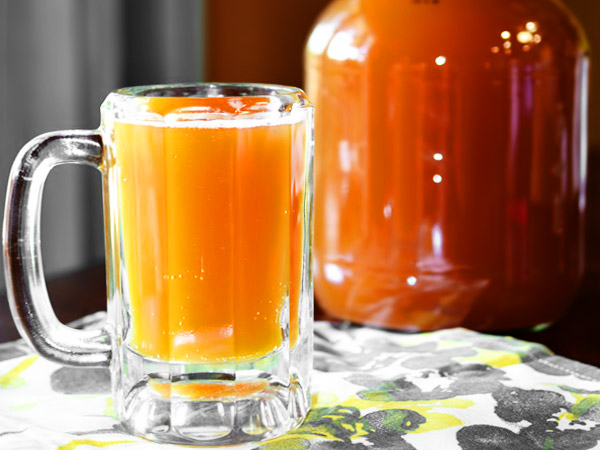

Cvas de casă

Dificultate- foaste ușor
Timp de preparare-15 min
Cantitatea-500 grame
Pasul 1 Tăiați 3 felii de pâine neagră cuburi și uscați-le sau prăjiți-le într-o tigaie uscată. Crutoanele trebuie să fie prăjite bine, dar nu arse.
Pasul 2 Puneți crutoanele într-un borcan de 3 l și adăugați zahărul și o bucățică mică de drojdie proaspătă. Masa din borcan trebuie să aibă înălțimea de 1.5-2 cm.
Pasul 3 Turnați deasupra apă caldă. După o zi cvasul va fi gata. Strecurați-l prin tifon și îl puteți bea.
Pasul 4 Ca să obțineți un cvas fenomenal, trebuie să așteptați câteva zile. Preparați acest cvas în zilele toride de vară.
Notă amestecul rămas poate fi utilizat de mai multe ori. Nu trebuie să adăugați nimic a doua oară, dar la a